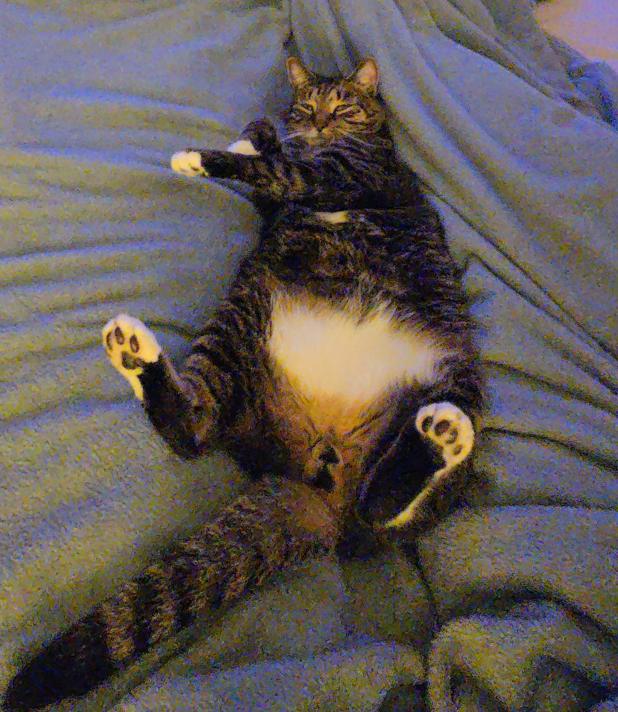

Help & FAQ
Got questions? Here are some answers!
Frequently Asked Questions
Q: How do I create a box?
A: Go to the Home page, enter a name in the "Create a New Box" form, and click the button!
Q: How do I add links?
A: First create a box, then select it from the dropdown, enter your link name and URL, and click "Add Link".
Q: Where is my data saved?
A: Your links are saved in your browser's local storage. They'll stay there until you clear your browser data.
Q: Will I lose my links if I close the browser?
A: Nope! They'll still be there when you come back.
Q: Can I delete a box?
A: Yes! Click the "Delete Box" button on any box to remove it.
Tips
- Use clear names for your boxes
- Make sure to include "https://" in your URLs
- Create different boxes for different topics
Still Need Help?
Visit the Contact page to send me a message!